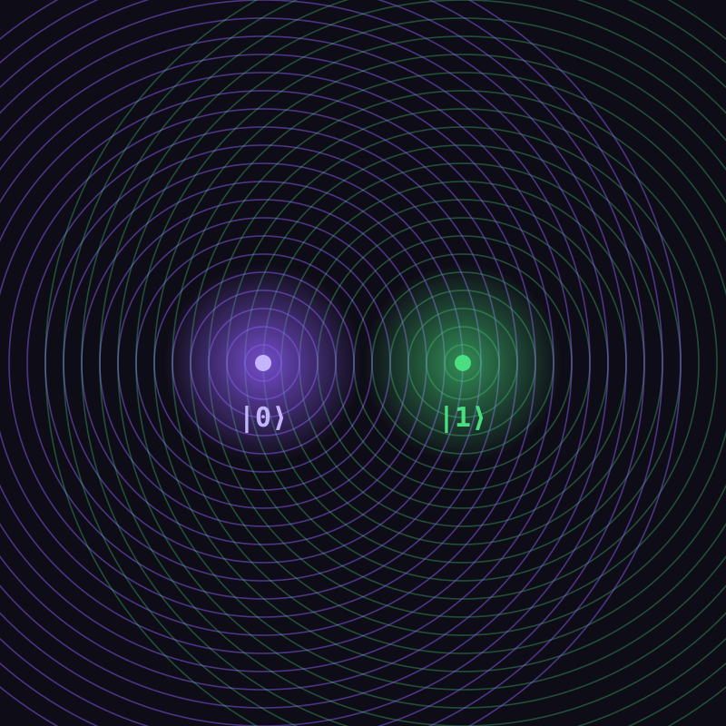

Datos Clave
| Dato | Valor |
|---|---|
| Área | Física / Cómputo |
| Unidad | Qubit |
| Tema central | QFT |
Aplicaciones
Criptografía : Algoritmo de Shor
Simulación : Moléculas y materiales
Búsqueda : Algoritmo de Grover
Optimización : Problemas combinatorios

Computación Cuántica
¿Qué es la Computación Cuántica?
La computación cuántica es un paradigma de cómputo que utiliza los principios de la mecánica cuántica —como la superposición, el entrelazamiento y la interferencia— para procesar información de una manera fundamentalmente distinta a la computación clásica. En lugar de usar bits que solo pueden valer 0 o 1, la computación cuántica usa qubits, que pueden existir en una combinación (superposición) de ambos estados al mismo tiempo.
Esto permite que un sistema cuántico explore muchas posibilidades a la vez, lo que en ciertos problemas —como la factorización de números grandes, la búsqueda en bases de datos o la simulación de moléculas— puede traducirse en algoritmos exponencialmente más rápidos que sus equivalentes clásicos.
La idea de computación cuántica se le atribuye principalmente al físico Richard Feynman, quien en 1981 propuso que, ya que la naturaleza es cuántica, la mejor forma de simularla sería usando un computador que también funcione con reglas cuánticas. Poco antes, el físico Paul Benioff ya había descrito en 1980 un modelo cuántico de una máquina de Turing, y el matemático ruso Yuri Manin planteó una idea similar ese mismo año. Más tarde, en 1985, el físico David Deutsch formalizó matemáticamente el concepto de "computador cuántico universal", sentando las bases teóricas que hoy se usan para diseñar algoritmos como la QFT.